Multimedia Design
3 EC's
Hoe kan ik een idee duidelijk maken als schets?
Uitvoering
Bewijsvoering
Uitvoering
Hoe kan ik een idee duidelijk maken als schets?
Leer-subdoelen
Hoe kan ik het idee in mijn hoofd omzetten tot een schets als ik slecht ben in tekenen?
Hoe kan ik de schets klaarmaken om een uiteindelijk product van te maken?
Activiteit
In de eerste iteratie hadden wij het idee om een chocoladereep met feitjes in de wikkel te maken. Van deze wikkel heb ik schetsen gemaakt.
Tijdens de tweede iteratie hadden wij een gezamelijke schetssessie met het groepje. Tijdens deze sessie heeft iedereen in klein formaat een idee voor de poster geschetst. Hierna hebben we besloten wie wat van de poster gaat maken, ik had aangeboden om de bomen te maken. Hier heb ik eerst schetsen van gemaakt.
Uitkomst
De chocoladewikkel die ik gemaakt had in de eerste iteratie was een grote uitdaging. Ik moest niet alleen rekening houden met het formaat, maar ook met de manier waarop de wikkel gevouwen wordt. Hiervan zijn voorbeelden te zien in de bewijsvoering.
In de tweede iterate hebben we het idee achter mijn schets van de poster uiteindelijk gebruikt om als een van de 5 lagen van de poster te gebruiken. De bomen die ik geschetst heb heb ik gemaakt door eerst inspiratie op het internet te zoeken. Met meerdere plaatjes heb ik bepaalde technieken voor het schetsen gevonden en deze toegepast bij de bomen die ik geschetst heb.
Reflectie
Ik heb het gevoel dat ik beter ben geworden in het schetsen van simpele assets. De bomen die ik geschetst heb ben ik erg tevreden over. Ik heb nieuwe dingen geleerd over het tekenen met diepte (dit ook dankzij de sharing van Rens). En de volgende periode wil ik meer leren over schaduwen.
Omdat ik mijzelf nogal slecht vond heb ik een manier gezocht om toch een duidelijke schets te maken, deze manier heb ik gevonden.
Door voorbeelden te gebruiken ben ik een betere tekenaar geworden. De voorbeelden waren geen overtrek materiaal, maar een inspiratiebron.
Uiteindelijk was het klaarmaken van de schets uiteindelijk een stuk makkelijker dan ik dacht. Dit heeft de productie fase een stuk korter gemaakt.
Door simpelweg een goede foto met gelijke belichting te maken, kon ik deze gemakkelijk overtrekken in Adobe Illustrator. Meer hierover bij de competentie "Multimedia Production".
Bewijsvoering
Designfase 1
Hieronder de chocoladewikkel die ik geschetst heb. Ook is er een foto met een poging van het vouwen van de wikkel te zien.
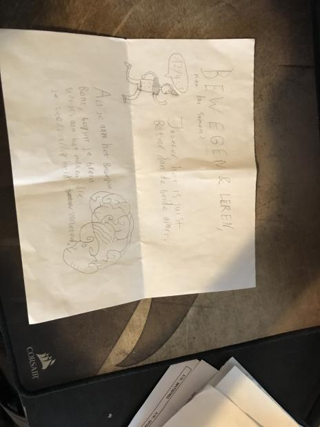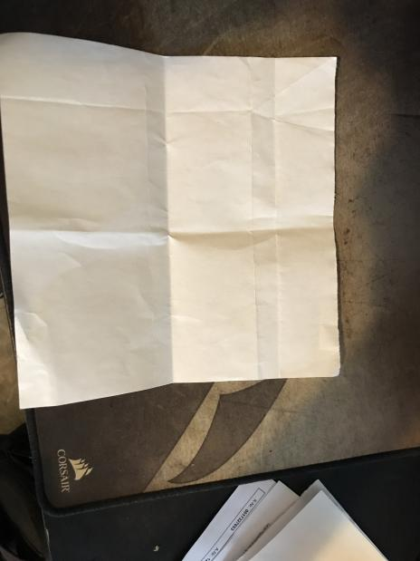
Designfase 2
Dit zijn de eerste schetsen van onze poster. De onderste heb ik gemaakt en is als laag gebruikt in het uiteindelijke ontwerp.
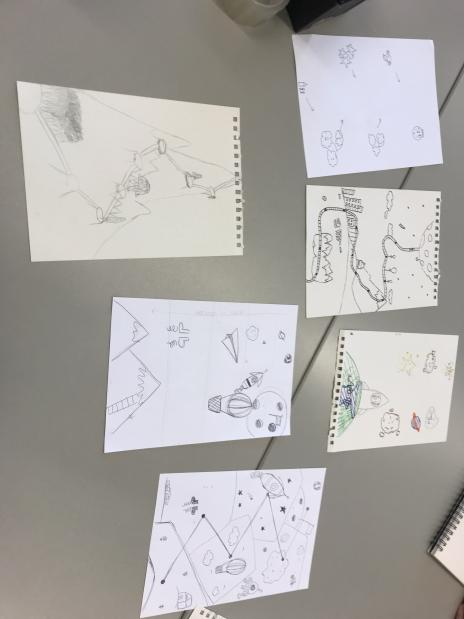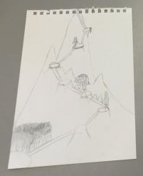
Hieronder de bomen die ik geschetst heb. Niet alle schetsen zijn finale schetsen. De nummers geven de volgorde aan.
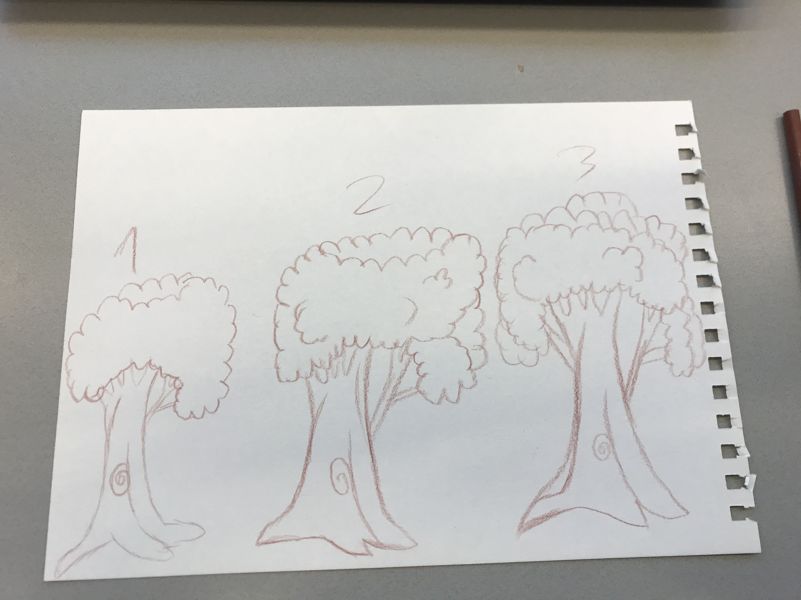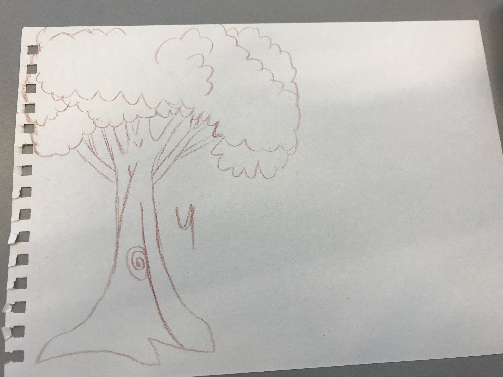
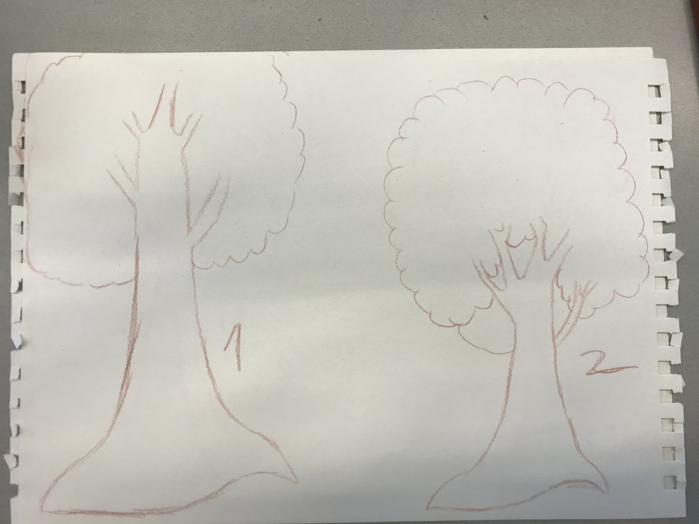
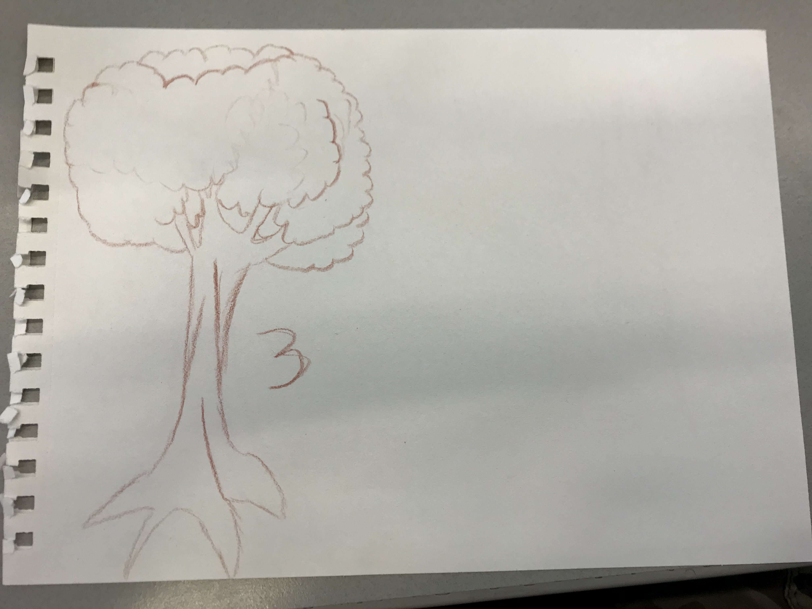
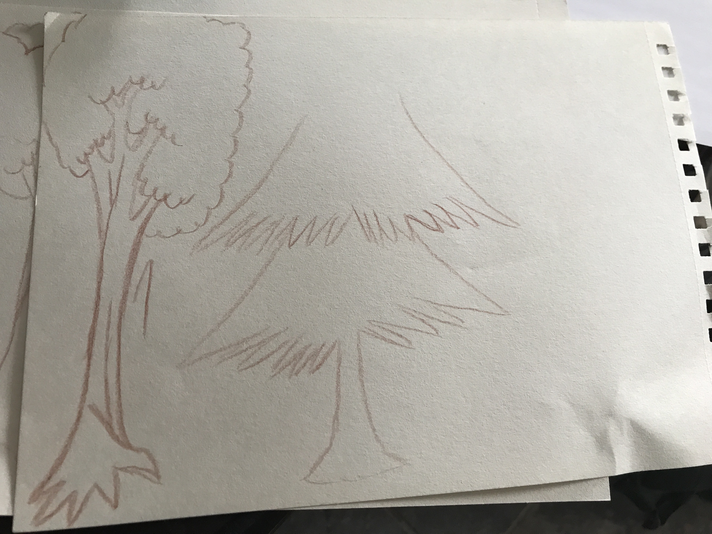
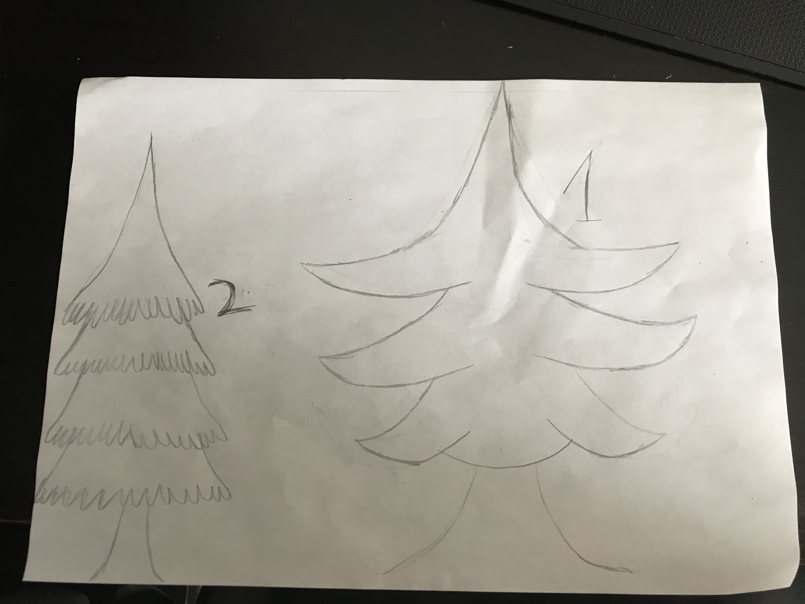
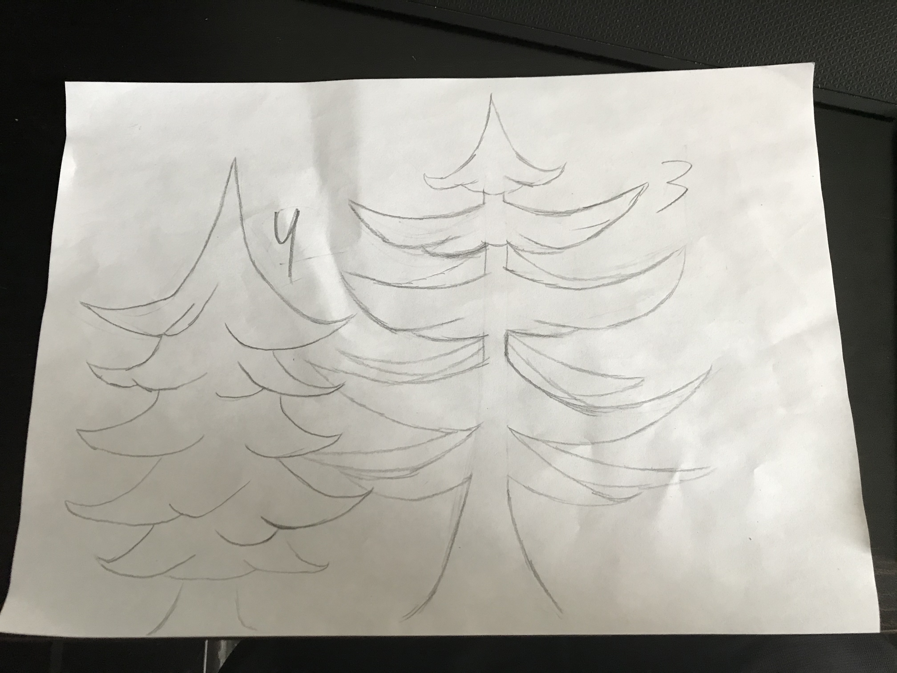